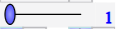
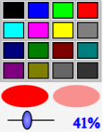
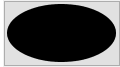
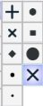
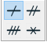
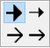

|
Sirve para seleccionar el estilo de trazo que se utilizará para los futuros objetos gráficos de tipo línea. |
 |
Sirve para seleccionar el espesor en pixels para los futuros objetos de estilo de línea. |
 |
La parte superior se utiliza para seleccionar uno de los 16 colores predefinidos de MathGraph32. La elipse de la izquierda  permite, cuando ella es cliqueada, elegir un color personalizado. Ella toma el color seleccionado y lo convierte en el color activo.El cursor permite elegir el nivel de transparencia de las superficies creadas. La elipse de la derecha da cuenta de la transparencia elegida sobre el color elegido. |
 |
Permite elegir el estilo de punto utilizado para los futuros puntos creados.. |
 |
Permite seleccionar el estilo de marca de segmento utilizada para las futuras marcas de segmentos creados. |
 |
Permite elegir el estilo de flecha utilizada para los vectores y las marcas de ángulos orientados. |
|
Permite elegir el estilo de las marcas de ángulos. |
|
Permite elegir el estilo de relleno de superficies. El icono en la parte superior izquierda corresponde a un estilo de relleno con transparencia. El icono a su derecha corresponde a un relleno opaco. |
|
Permite finalizar ciertas acciones. Solo aparece cuando se usan ciertas herramientas. |
Nota: La herramienta paleta  permite, cliqueando sobre un objeto, modificar su estilo o su color.
permite, cliqueando sobre un objeto, modificar su estilo o su color.